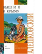

Эта повесть - продолжение книги "Кыш, Двапортфеля и целая неделя". На этот раз читатели встретятся с Ал ешей Сероглазовым и его псом Кышем на отдыхе в Крыму. И там произойдут такие интересные события!..